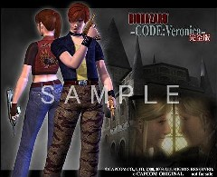

|
惡靈古堡∼聖女密碼-----預約贈品
|
| 2002年2月3日Capcom公司發售「Biohazard
Code：Veronica」PS2版廣受好評，在還沒上市時舉辦了預 售活動，從1月20日開始，下圖即是當初預約的贈品Veronica ID卡，並且可以索取聖女密碼的體驗版。 這個只送不賣的ID卡製作時非常注重質感，拿起來有重量感，上面印有Umbrella公司在Rockfort島 的囚禁室犯人的編號，相當精緻。
2003年8月7日，NGC上發售「Biohazard Code：Veronica」的移植版，預約的贈品為一個精緻的滑鼠 墊，注意，實際贈品上沒有「SAMPLE」字樣。  |
惡靈深淵Biohazard Abyss http://98.to/coolbio